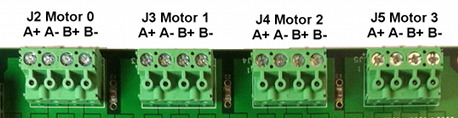
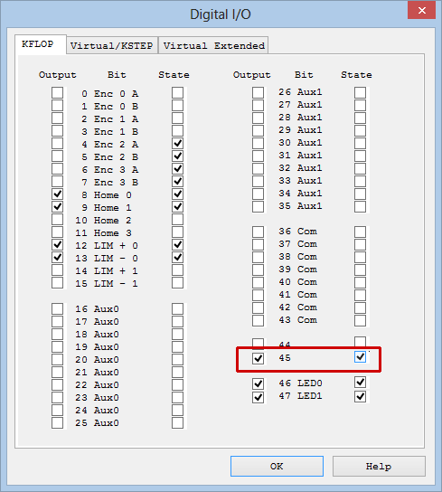
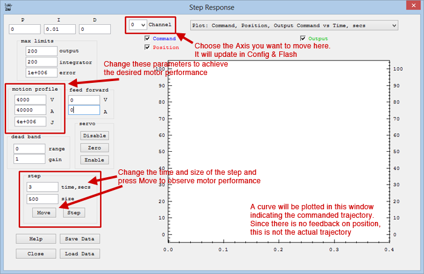
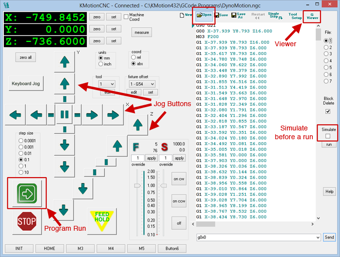
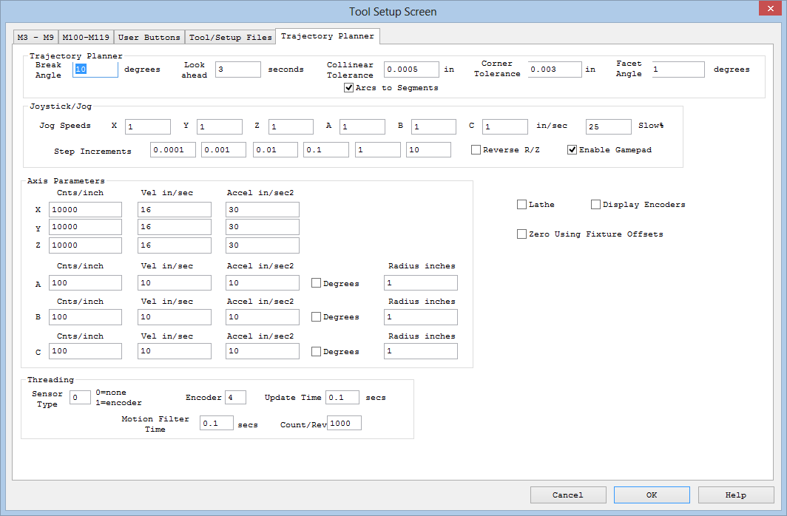

KSTEP Basics Tutorial
Introduction
KSTEP is an add-on stepper driver for KFLOP and it is perhaps the easiest way available to start controlling stepper motors.This guide will help you with the most basic KSTEP setup so that by the end of these instructions you will be able to control stepper motors using the KMotion setup/configuration screens, C-Code and G-Code. This guide is not comprehensive, however, and you should spend time reading the help pages for more in-depth information:
- Main manuals page: http://dynomotion.com/Help/index.htm
- KFLOP Connectors: http://dynomotion.com/Help/SchematicsKFLOP/ConnectorsKFLOP.htm
- KSTEP Connectors: http://dynomotion.com/Help/SchematicsKStep/ConnectorsKStep.htm
- KSTEP Use and Settings: http://dynomotion.com/Help/SchematicsKStep/UsingKStep.htm
- KSTEP Block Diagram: http://dynomotion.com/Help/BlockDiagramKStep.htm
- KSTEP Specifications: http://dynomotion.com/Help/SpecificationKStep.htm
- Yahoo Groups Forum (research and ask questions here): https://groups.yahoo.com/neo/groups/DynoMotion/info
- CNC Forum (research and ask questions for CNC-specific applications here): http://www.cnczone.com/forums/dynomotion-kflop-kanalog/
KSTEP Tutorial Table of Contents:
- Basic Software Setup
- Basic Hardware Setup
- Providing +5V Board Power
- Checking Firmware Version
- Voltage Clamping
- Power Supply input
- Current Settings
- Basic Motor Wiring
- Driving Your Steppers
What you need:
- KFLOP/KSTEP or KFLOP/2xKSTEP combo with provided hardware
- Dedicated 12V-48V Motor Power Supply to be wired into KSTEP as described below. Optional +5V power supply.
- Stepper Motors
- USB Cable (included with every KFLOP and KFLOP combo order)
- Ohm Meter (or multi-meter)
- General tools for electronics (wire cutters/strippers, small screwdrivers, etc.)
1. Software Setup
Start by ensuring you have the latest KMotion software installed on your computer. Download and install the latest KMotion software from This Software Download Page. Ensure the software installs and starts normally. If the software does not install properly, search the Yahoo or CNC Zone forums for help on common installation issues such as temporarily disabling antivirus software installation preventions, or enabling Windows unsigned software installations.Note: Every screen in KMotion has a 'Help' button that will bring up a Help page that is focused on that particular screen.
2. Hardware Setup
2A. Providing +5V Board Power
In a static-free environment, remove your KFLOP and KSTEP from the packaging and connect the two as shown here. The first step to powering up KFLOP is to determine how to provide the +5V used to power the boards. Both KFLOP and KSTEP require +5V for operation and there are a number of ways to provide it.{kind=link}
Note: Once +5V is supplied to the boards, it is available at every +5V terminal. Therefore do not supply +5V by more than one way or you will damage the boards and potentially your power supplies. The only exception to this is if KFLOP and KSTEP are isolated by removing jumpers on KSTEP JP34 and JP35. With this isolation, +5V must be supplied to both KFLOP and KSTEP as described below.
With jumpers installed on KSTEP's JP34 and JP35, the +5V and GND signals will be shared between both boards and only needs to be supplied in one way. The possibilties are:
- On KFLOP: Through the USB cable plugged into KFLOP. The jumper on KFLOP's J3 must be installed for power to be received through the USB cable and the jumpers on KSTEP's JP34 and JP35 must be installed for KSTEP to receive the +5V signal. If board power is supplied this way, ensure +5V is not provided through KFLOP's JR1, KSTEP's JR1, or KSTEP's J6 connectors or the board and power supply could be damaged. Note that the USB cable should be of high quality and must meet USB 2.0 specifications for plug shell-to-shell resistance of <0.6 Ohms. When measuring resistance, remember to subtract the resistance introduced by the measuring device by first measuring the probe-to-probe contact resistance.
- On KFLOP: +5V and GND through KFLOP's JR1 Molex® connector. The jumper on KFLOP's J3 must be removed to avoid receiving +5V from the USB cable in this case. The jumpers on KSTEP's JP34 and JP35 must be installed for KSTEP to receive the +5V signal - in this case do not provide +5V on KSTEP's JR1 or J6 connectors. Note that in this case, the +12V provided through the Molex connector is not used internally, but is routed to pins on the JP4, JP6, and JP7 connectors for convenience.
- On KSTEP: +5V and GND through KSTEP's JR1 Molex connector. The jumpers on KFLOP's J3 must be removed and the jumpers on KSTEP's JP34 and JP35 must be installed in this case in order for KFLOP to receive +5V power. Also note that if KSTEP's JR1 Molex connector is used, it is likely that +12V is being provided through this connector and therefore all VB connections on KSTEP will have 12V applied to them, and which would then be used for motor power. Therefore, do not provide motor power through KSTEP's J1 terminal.
- On KSTEP: +5V and GND through KSTEP's J6 terminal block. The jumpers on KFLOP's J3 must be removed and the jumpers on KSTEP's JP34 and JP35 must be installed in this case in order for KFLOP to receive +5V power.
Once the board power delivery method is determined, the boards are ready to power up. Provide +5V via your chosen method to power up the boards.
On power up, KFLOP LEDs will illuminate as will the "+5V" LED on KSTEP indicating that both boards are receiving a +5V signal. Once motor supply power is fed into KSTEP as described below, the "MOT PWR" motor supply LED on KSTEP will illuminate.
2B. Check the firmware version and update if necessary
Next, ensure the software version on KFLOP is up-to-date. In the KMotion software, open the Console screen and type the command "Version" into one of the command lines (if one of the command lines already contains the command there is no need to type it). Press the "Send" button next to the command to send the Version Command to KFLOP to display the version of onboard firmware. If the firmware version does not match the version of KMotion you downloaded and are running (Help>About KMotion...), open the Config screen and press the "New Version" button. The pop-up window will automatically locate the necessary file for the sofware update, click "Open" and confirm the next pop-up. Allow a few seconds for the software to finish updating and after it is finished, cycle power to KFLOP.2C. Motor Power Supply Setup - Voltage Clamping
Voltage spikes due to Regenerative Braking and other sources can potentially raise the supply voltage up to a level that can damage electronics including KSTEP or the power supply. Voltage Spikes may also cause a power supply to trip a fault and shut down. KSTEP's Voltage clamp can be used to avoid these problems.Motor power supply may be supplied through KSTEP's J1 terminal block OR KSTEP's JR1 Molex connector, but not both at the same time; and it is crucial that voltage clamps on KSTEP are set according to the motor power supply voltage level. KSTEP can handle motor power supplies from 12V to 48V and voltage clamp settings are designed to be 1V higher than common power supply voltages. It is critical that you clamp voltage on KSTEP at a value HIGHER than the motor power supply
See this image for voltage clamp jumper location: KSTEP Connector Pinouts
{kind=link}
Common power supply voltages are 12V, 24V, 36V, and 48v. KSTEP has a voltage clamping feature that can be set to 13V, 25V, 37V, or 49V volts. So whatever is the value of your motor power supply voltage, set the clamp to the next value higher than your motor power supply. Setting the voltage clamp to a value lower than the power supply will draw excessive current and is likely to cause damage to your KSTEP and/or the power supply
Pin jumpers are provided with every KSTEP purchase. These are small plastic rectangular pieces with a metal coupling inside that connects two pins together when applied. You will use these to set the voltage clamp. Essentially, every jumper added to A, B, or C of the voltage clamping pins will reduce the voltage clamping by 12V. So, with no jumpers, voltage is clamped at 49V. With a jumper on A, voltage is clamped at 37V. With jumpers on A and B, voltage is clamped at 25V. With jumpers applied to A, B, and C, voltage is clamped at 13V (the lowest setting). Make sure voltage is clamped HIGHER than your power supply voltage or you will damage KSTEP.
|
Motor Power Supply Voltages |
Required Number of Jumpers | Jumper Location |
Clamping Level |
|
37V to 48V |
None | - |
49V |
|
25V to 36V |
1 | A |
37V |
|
13V to 24V |
2 | A+B |
25V |
|
12V Only |
3 | A+B+C |
13V |
2D. Motor Power Supply Setup - Connecting Motor Power to KSTEP
There are two ways to feed motor power into KSTEP, and they are incompatible with each other such that you must choose one or the other and not both or you will damage your power supplies and KSTEP.The first and perhaps easiest way to connect motor power is through the Molex connector at position JR1 on KSTEP. Many power supplies have this standard connector and it plugs easily into KSTEP to provide motor power. Caution: Note that if JR1 is plugged into a power supply this way, all VB connections on the board will have that voltage active on them. Also, it is likely that +5V signals are provided by a power supply with this connector and so you need to make sure no other 5V signals are being provided as described in the Board Power section of this tutorial before plugging power into the board in this way.
The second way to supply motor power is through the screw terminals at position J1 on KSTEP. For applications requiring less than 10 Amps, simply screw in power supply leads into one of the respective VBB+ and GND terminals on J1. Do not supply power through JR1 if you supply power on J1 or you will damage KSTEP and your power supply.
Note: for applications requiring more than 10 Amps, both of the VBB and GND connections on J1 should be used.
Power Supply Voltage Selection is a fairly complex subject but as a rule-of-thumb the supply should be 10~15 times higher than the rated voltage of the steppers. Sometimes the voltage of the Stepper motor is not stated, in which case it can be determined by using Ohm's law ( V = I x R ) and the Current and Resistance specifications. For example, for a 3 Amp motor with a resistance of 0.6 ohms the motor would require 1.8V. A power supply of 18V to 27V might be used.
2E. Motor Current Settings
The current supplied to your motors must be configured to provide the correct level and KSTEP provides a physical method of doing this through the installation of jumpers on current setting pins on KSTEP.Stepper motor current is generally specified on a per coil basis such as 670mA, or 0.67A, per coil. It is important to know what is the current per coil for your motors so you can set the correct current jumpers on KSTEP. The current setting pins are labeled on the board as "CUR MOTOR#" where # is the axis number from 0-3. KSTEP has a High, Medium, and Low current jumper for each motor coil (2 coils per axis). Set jumpers on the H (high), M (medium), and L (low) pins such that the value is the next level lower than your motor specifications. For example, if your motor has a per coil current rating of 670 mA, you will not set any jumpers for both coils - corresponding to a current setting of 0.63A. For a motor with a 3.5A current per coil specification you would set jumpers on H for both coils corresponding to a current setting of 3.13A.
Use the table below to determine how to set your jumpers according to the motor current ratings.
| Motor Current per Coil Rating (Amps) | H | M | L | Current Setting (Amps) |
| 0.63 to 1.24 | Removed | Removed | Removed | 0.63 |
| 1.25 to 1.87 | Removed | Removed | Installed | 1.25 |
| 1.88 to 2.49 | Removed | Installed | Removed | 1.88 |
| 2.50 to 3.13 | Removed | Installed | Installed | 2.50 |
| 3.13 to 3.74 | Installed | Removed | Removed | 3.13 |
| 3.75 to 4.37 | Installed | Removed | Installed | 3.75 |
| 4.38 to 4.99 | Installed | Installed | Removed | 4.38 |
| 5.00+ | Installed | Installed | Installed | 5.00 |
2F. Wiring Motors to KSTEP
Stepper motors come in a variety of wiring configurations from 4 to 8 wires. KSTEP only needs 4 of these to drive a stepper since KSTEP does not require the center tap wires. KSTEP requires only the full bridge coils to drive the stepper and you can ignore center tap wires if your motor has them. For 8-wire steppers, you have a choice about how to wire them, in series or in parallel and would need to choose the power supply to fit the wiring method.There are many resources on the web that describes Stepper motor wiring so we will not address the specifics here, but essentially you need only to wire in the coils across the "+" and "-" of the motor power output of KSTEP.
Warning: you can damage KSTEP if you wire the motors incorrectly make sure to measure the resistance between coils and that you have identified your coils properly before wiring into KSTEP. It is vitally important that each coil is wired into KSTEP properly.
Motors can be wired into connectors J2 through J5 on KSTEP according to the following diagram:

- Axis Channel #0: Output Channel = 8 -> Motor Wiring J2
- Axis Channel #1: Output Channel = 9 -> Motor Wiring J3
- Axis Channel #2: Output Channel = 10 -> Motor Wiring J4
- Axis Channel #3: Output Channel = 11 -> Motor Wiring J5
3. Driving Your Steppers
3A. Enabling Output
Once you have the voltage clamping, current limits and power supply set and wired, you are ready to begin moving your motors.To do this, while the KSTEP LED D1 MOT PWR is illuminated, open KMotion.exe, select the Digital IO Screen, Set IO bit 45 as Output (enable the checkbox to the left of bit 45), Set IO 45 State to On (enable the checkbox to the right of bit 45). Verify that the KSTEP D3 ENABLE LED illuminates and that your motors hold position against a torque - in other words, you cannot move the motor shaft with your fingers. In this state, the motors will become warm and may become too hot to touch.

As a side note, this action can also be performed by entering the following commands in a C program or sending the commands using the Console screen:
| SetBitDirection(45,1); //This sets the Enable Signal as Output SetBit(45); //This Enables the amplifiers |
3B. Setting Axis/Channel Parameters and Running an Initialization C Program (Init)
The goal in this section is to set the parameters that will ultimately go into the Init program. To do this, you will use two screens in KMotion: "Config & Flash" and "Step Response." If you plan to use an encoder for Closed-Loop Stepper Control, you would also use the "IIR Filters" screen as well, but it is not used for open-loop stepper control as described in this tutorial. You can view an explanation of how parameters are passed to/from KFLOP, loaded, saved and copied to C Programs here: http://dynomotion.com/Help/FlashHelp/Parameters/index.html.- In KMotion, Open the "Config & Flash" Screen and select the "Channel" at the top of the screen for the axis you plan to use (0-3).
- Since it is best to start with a known default, click on "Load Channel" and choose the corresponding "KStepAxis#.mot" file where # matches the chosen Channel. This will load the last saved settings in that file, which are set to default values that should work for a majority of stepper motors. In addition, loading this file puts the Channel into "Step Dir" Axis output mode, which is required for KSTEP.
- After loading the Channel, open the "Step Response Screen" screen.
- Notice at the top that the Channel number matches the Channel number on the Configuration screen. Note: changing the Channel on either the Configuration or the Step Response screen will change the Channel in the other screen.
- The purpose of the Step Response screen in this tutorial is simply to help you set the Velocity, Acceleration and Jerk values to achieve smooth motor performance. These values are on the Step Response screen under "motion profile" labeled V, A and J, respectively.
- Click on the 'Move' button. If Channel "0" is chosen, the motor wired to the J2 terminal should move a few degrees one direction and then back to the original position and, after a few seconds, a plot will appear in the Step Response Screen showing the Commanded Step movement. You can increase the step time (up to a maximum of 3.5 seconds) and size in this screen to get a larger movement.
- Now you can change the V, A, and J values until you are satisfied that the motor is moving smoothly - typically keeping A to be an order of magnitude or more than V, and J to be an order of magnitude more than A. If the motor stalls, seems jerky or misses steps, you can decrease the parameters until motion is smooth. In fact, it is recommended that you increase the parameters until the motor stalls, then decrease the parameters by 30-50%. Note: motors under load will perform differently so you may need to revisit this step once your motors are carrying weight. In that case, take precautions to ensure the system is not damaged if the motor experiences a stall. Click here for a discussion on choosing values for the Velocity, Acceleration and Jerk parameters.
The V, A, and J parameters are in terms of microsteps since KSTEP performs all movements using microstepping, which is 16 microsteps for every step. Therefore a Velocity value of 4,000 means 4,000 microsteps per second. You can relate this to your motor velocity by this equation:
Motor RPM = 60 * V / (16 * Step/Rev)
where V is the Velocity value on the Step Response screen and Step/Rev is the steps per revolution specification for your motor. For a motor with 200 steps/rev, a value of 4,000 for V equates to 75 RPM. Take note of the direction your motor spins and if you want it to spin in the opposite direction you can change the 'gain' value in the Configuration window to '-1'. - As the parameters are changed, they are automatically available to the Configuration window so they may be saved, downloaded to KFLOP, copied to the clipboard or exported to an open C program. Furthermore, the parameters for each axis are persistent in that you can select a new Channel and the parameters for the previous Channel will not be lost unless the KMotion program is closed. Because of this, when you copy to the clipboard or export to an open C program, parameters for all axes are copied or exported to the C program (as long as the axis exists in the C program as shown below).

Once the parameters are set, you can save them to a file, export them to a C program or download them to KFLOP. To do this:
- Save to a file: On the Config & Flash screen, click the Save Channel button and choose a file location and click Save. You can open this file later to reload those paramaters.
- Download to KFLOP: On the Config & Flash screen, click the Download Channel button. This will load KFLOP with the axis parameters.
- Copy to a C Program: For this you must have a C Program open with the initialization parameters within int main(). An example C Program is located in the \KMotionXXX\C Programs\KStep folder and a good program to choose is the InitKStep3Axis.c, which has parameters for, and enables, 3 axes. Then simply click the 'Export All to Open C Program' and all available channels will be merged into the open C program if channel assignments are present there. This would then become an "Init" file.
- Copy to Clipboard: This button simply copies the parameters to Window's Clipboard so you may paste into any other text window that you wish.
Here are the parameters for a single axis:
ch0->InputMode=NO_INPUT_MODE;
ch0->OutputMode=STEP_DIR_MODE;
ch0->Vel=115000;
ch0->Accel=50000;
ch0->Jerk=100000;
ch0->P=0;
ch0->I=0.01;
ch0->D=0;
ch0->FFAccel=0;
ch0->FFVel=0;
ch0->MaxI=200;
ch0->MaxErr=1e+006;
ch0->MaxOutput=200;
ch0->DeadBandGain=1;
ch0->DeadBandRange=0;
ch0->InputChan0=0;
ch0->InputChan1=0;
ch0->OutputChan0=8;
ch0->OutputChan1=0;
ch0->MasterAxis=-1;
ch0->LimitSwitchOptions=0x100;
ch0->LimitSwitchNegBit=0;
ch0->LimitSwitchPosBit=0;
ch0->SoftLimitPos=1e+030;
ch0->SoftLimitNeg=-1e+030;
ch0->InputGain0=1;
ch0->InputGain1=1;
ch0->InputOffset0=0;
ch0->InputOffset1=0;
ch0->OutputGain=1;
ch0->OutputOffset=0;
ch0->SlaveGain=1;
ch0->BacklashMode=BACKLASH_OFF;
ch0->BacklashAmount=320;
ch0->BacklashRate=320;
ch0->invDistPerCycle=1;
ch0->Lead=0;
ch0->MaxFollowingError=1000000000;
ch0->StepperAmplitude=20;
ch0->iir[0].B0=1;
ch0->iir[0].B1=0;
ch0->iir[0].B2=0;
ch0->iir[0].A1=0;
ch0->iir[0].A2=0;
ch0->iir[1].B0=1;
ch0->iir[1].B1=0;
ch0->iir[1].B2=0;
ch0->iir[1].A1=0;
ch0->iir[1].A2=0;
ch0->iir[2].B0=0.000769;
ch0->iir[2].B1=0.001538;
ch0->iir[2].B2=0.000769;
ch0->iir[2].A1=1.92076;
ch0->iir[2].A2=-0.923833;
Notice that the "ch0->" indicates it is setting parameters for Axis #0. Each axis will have all of these parameters and these are what are exported to the C program or copied to the clipboard when those options are selected in the Configuration screen.
Below is the example that shows 3 Axes being configured, enabled, and referenced into a coordinate system. This constitutes a full Init file to initialize a 3-axis system as discussed in the next section:
#include "KMotionDef.h"
// Defines axis 0, 1, 2 as simple step dir outputs
// enables them
// sets them as an xyz coordinate system for GCode
int main()
{
ch0->InputMode=ENCODER_MODE;
ch0->OutputMode=STEP_DIR_MODE;
ch0->Vel=40000.000000;
ch0->Accel=400000.000000;
ch0->Jerk=4000000.000000;
ch0->P=0.000000;
ch0->I=0.010000;
ch0->D=0.000000;
ch0->FFAccel=0.000000;
ch0->FFVel=0.000000;
ch0->MaxI=200.000000;
ch0->MaxErr=1000000.000000;
ch0->MaxOutput=200.000000;
ch0->DeadBandGain=1.000000;
ch0->DeadBandRange=0.000000;
ch0->InputChan0=0;
ch0->InputChan1=0;
ch0->OutputChan0=0;
ch0->OutputChan1=0;
ch0->LimitSwitchOptions=0x0;
ch0->InputGain0=1.000000;
ch0->InputGain1=1.000000;
ch0->InputOffset0=0.000000;
ch0->InputOffset1=0.000000;
ch0->invDistPerCycle=1.000000;
ch0->Lead=0.000000;
ch0->MaxFollowingError=1000000000.000000;
ch0->StepperAmplitude=20.000000;
ch0->iir[0].B0=1.000000;
ch0->iir[0].B1=0.000000;
ch0->iir[0].B2=0.000000;
ch0->iir[0].A1=0.000000;
ch0->iir[0].A2=0.000000;
ch0->iir[1].B0=1.000000;
ch0->iir[1].B1=0.000000;
ch0->iir[1].B2=0.000000;
ch0->iir[1].A1=0.000000;
ch0->iir[1].A2=0.000000;
ch0->iir[2].B0=0.000769;
ch0->iir[2].B1=0.001538;
ch0->iir[2].B2=0.000769;
ch0->iir[2].A1=1.920810;
ch0->iir[2].A2=-0.923885;
EnableAxisDest(0,0);
ch1->InputMode=ENCODER_MODE;
ch1->OutputMode=STEP_DIR_MODE;
ch1->Vel=40000.000000;
ch1->Accel=400000.000000;
ch1->Jerk=4000000.000000;
ch1->P=0.000000;
ch1->I=0.010000;
ch1->D=0.000000;
ch1->FFAccel=0.000000;
ch1->FFVel=0.000000;
ch1->MaxI=200.000000;
ch1->MaxErr=1000000.000000;
ch1->MaxOutput=200.000000;
ch1->DeadBandGain=1.000000;
ch1->DeadBandRange=0.000000;
ch1->InputChan0=1;
ch1->InputChan1=0;
ch1->OutputChan0=1;
ch1->OutputChan1=0;
ch1->LimitSwitchOptions=0x0;
ch1->InputGain0=1.000000;
ch1->InputGain1=1.000000;
ch1->InputOffset0=0.000000;
ch1->InputOffset1=0.000000;
ch1->invDistPerCycle=1.000000;
ch1->Lead=0.000000;
ch1->MaxFollowingError=1000000000.000000;
ch1->StepperAmplitude=20.000000;
ch1->iir[0].B0=1.000000;
ch1->iir[0].B1=0.000000;
ch1->iir[0].B2=0.000000;
ch1->iir[0].A1=0.000000;
ch1->iir[0].A2=0.000000;
ch1->iir[1].B0=1.000000;
ch1->iir[1].B1=0.000000;
ch1->iir[1].B2=0.000000;
ch1->iir[1].A1=0.000000;
ch1->iir[1].A2=0.000000;
ch1->iir[2].B0=0.000769;
ch1->iir[2].B1=0.001538;
ch1->iir[2].B2=0.000769;
ch1->iir[2].A1=1.920810;
ch1->iir[2].A2=-0.923885;
EnableAxisDest(1,0);
ch2->InputMode=ENCODER_MODE;
ch2->OutputMode=STEP_DIR_MODE;
ch2->Vel=40000.000000;
ch2->Accel=400000.000000;
ch2->Jerk=4000000.000000;
ch2->P=0.000000;
ch2->I=0.010000;
ch2->D=0.000000;
ch2->FFAccel=0.000000;
ch2->FFVel=0.000000;
ch2->MaxI=200.000000;
ch2->MaxErr=1000000.000000;
ch2->MaxOutput=200.000000;
ch2->DeadBandGain=1.000000;
ch2->DeadBandRange=0.000000;
ch2->InputChan0=2;
ch2->InputChan1=0;
ch2->OutputChan0=2;
ch2->OutputChan1=0;
ch2->LimitSwitchOptions=0x0;
ch2->InputGain0=1.000000;
ch2->InputGain1=1.000000;
ch2->InputOffset0=0.000000;
ch2->InputOffset1=0.000000;
ch2->invDistPerCycle=1.000000;
ch2->Lead=0.000000;
ch2->MaxFollowingError=1000000000.000000;
ch2->StepperAmplitude=20.000000;
ch2->iir[0].B0=1.000000;
ch2->iir[0].B1=0.000000;
ch2->iir[0].B2=0.000000;
ch2->iir[0].A1=0.000000;
ch2->iir[0].A2=0.000000;
ch2->iir[1].B0=1.000000;
ch2->iir[1].B1=0.000000;
ch2->iir[1].B2=0.000000;
ch2->iir[1].A1=0.000000;
ch2->iir[1].A2=0.000000;
ch2->iir[2].B0=0.000769;
ch2->iir[2].B1=0.001538;
ch2->iir[2].B2=0.000769;
ch2->iir[2].A1=1.920810;
ch2->iir[2].A2=-0.923885;
EnableAxisDest(2,0);
DefineCoordSystem(0,1,2,-1);
return 0;
}
You can find more information on how to quickly import or export settings between the KMotion Screens and a C Program here.
3C. The Four Requirements for an Init C Program
At this point, you are ready to begin writing a C program to move your motors or simply use it as an Initilization file that allows KMotionCNC to control them. An initilization C program, which is also referred to simply as an Init file, will have four operations (all of which the InitKStep3Axis.c and InitKStep4Axis.c programs already have):-
The following commands:
KStepPresent=True; //which tells KFLOP that KSTEP is connected
FPGA(KAN_TRIG_REG)=4; //Mux PWM0 to JP7 Pin5 IO 44 for KSTEP
FPGA(STEP_PULSE_LENGTH_ADD) = 63 + 0x80; //which sets polarity and pulse length to 4us -
Axis settings such as the velocity, acceleration and jerk parameters as described in the previous section along with the following command for each axis:
EnableAxisDest(#,0); //where # is the axis/channel number -
Commands to enable all axes:
SetBitDirection(45,1); //This sets the Enable Signal as Output
SetBit(45); //This Enables the amplifiers -
And then a command that defines which axes are in the coordinate system:
This command defines a coordinate system with 3 axes: 0, 1, 2 and the 4th axis is disabled by entering a '-1', otherwise a '3' would be used to include the 4th axis.DefineCoordSystem(0,1,2,-1);
Since adding C code is more involved, that will be handled in a different tutorial, but here is an example of a simple infinite loop to move one motor that can be added into an init file:
|
for(;;) //loop forever {
while (!CheckDone(0)) ; //ensure the move of Axis 0 is complete before moving on MoveRelAtVel(0,-500,100); //relative move Axis 0 for 500 steps in opposite
|
Then you only need to Save, Compile, Download and Run the program to have KFLOP execute the program. You can do this in steps on the C Program screen or all in one button click with the Save-Compile-Download-Run button on the top. To stop the program, press the "Stop" button on the main KMotion menu.
The next steps cover how to use KMotionCNC for basic movements.
3D. Use KMotionCNC to jog your motors
After running an Init file such as InitKStep3Axis.c for initialization, you are ready to move your motors by using KMotionCNC. Try moving the motors by first clicking on the jog buttons (buttons with green arrows at left). If everything is initialized properly the motors should move when the respective jog button is clicked. These jog buttons are mapped to the axes by the "DefineCoordSystem(0,1,2,-1);" command discussed above. In this example, the X-axis is mapped to Axis #0, Y-axis is mapped to Axis #1, Z-axis is mapped to Axis #2 and the A-axis is not used. If pressing the jog buttons move the motors, then you are ready to begin running G-Code. To do this, within KMotionCNC choose "Open" and choose a G-Code program from the GCode Programs folder. If everything has been initialized correctly, the motors will move when the Start button is pressed to start the G-Code.Note: An initialization C program such as the InitKStep3Axis.c must be run before operating with KMotionCNC will work. This initialization C program can be called with the 'Init' button in KMotionCNC once programmed to do so by setting the file location and Thread number for the INIT button within the 'Tool Setup' Screen on the 'User Buttons' tab in KMotionCNC:

The GUI of KMotionCNC can be configured based on how many axes you are using by changing the option for "Main Dialog Face" on the 'Tool/Setup Files' tab within the 'Tool Setup' screen. The screenshot below is for a 3-axis setup as you can tell from the display of only X, Y, and Z coordinates.

Note that the motors will not yet be moving accurately until the full parameters are set within KMotionCNC. To do this, you will set the Counts per inch (Cnts/inch) for each axis on the Trajectory Planner tab within the Tool Setup screen of KMotionCNC. You should also set the axis velocities and accelerations, and jog velocities and accelerations for your system on this tab.

You can measure the distance each axis moves for a given number of steps and then use this Cnts/inch value as a conversion factor so KMotionCNC knows how many steps to move for a given distance.
For greater accuracy, you can create a Geocorrection File.
For a detailed discussion on Step and Direction Outputs, See this page.
Once you understand everything in this tutorial, you will be ready to dive into the details of your KFLOP/KSTEP. See our
manual for more information.
KSTEP Tutorial Rev. 1.0